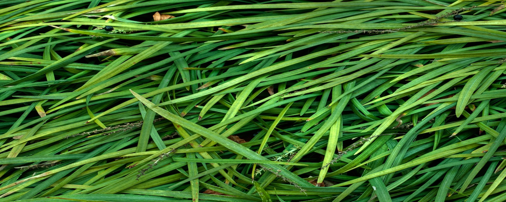

EarthCube Website Updates
We are reworking our web platform to make it easier for you to interact with EarthCube. The new site is schedules to launch soon, but until then, all the resources and information you need are available at earthcube.ning.com.

Events
Earthcube participates in a wide variety of workshops, conferences, and other events.
Funding
A key component of the EarthCube virtual community is to provide updates on funding opportunities and provide a forum in which potential collaborators can find each other.